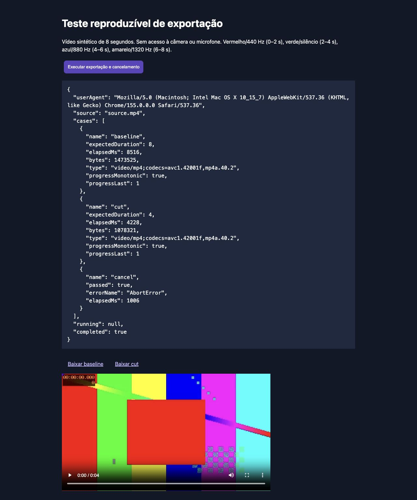

Revisão local atualizada: ver implementação, capturas e testes finais. Homologação física permanece pendente antes da publicação.Plano de melhorias: ver concluído, parcial e pendente.
Atualização: correções implementadas e testadas localmente. Ver o resultado e os limites. O diagnóstico abaixo registra o estado anterior às correções.ALVOPROMPTER · VERIFICAÇÃO DE 16/10/2026
O principal déficit está na confiabilidade da edição
Já temos geração de roteiro, gravação, legendas, seleção de trechos, tratamento de pausas e exportação. A verificação encontrou falhas concretas na seleção e no tempo dos cortes. Adicionar funções antes de corrigir esses pontos aumenta o risco de perder conteúdo útil.
O que foi verificado
REA 6.5.0 analisou cinco scripts públicos do BIGVU em três execuções. A navegação real cobriu entrada, início, roteiro e tentativa de anexar uma tomada. No AlvoPrompter, sete sondagens reproduziram comportamentos do código de cortes, e um teste no navegador executou o renderizador real com um vídeo sintético.
Limite: a conta BIGVU exibiu uma oferta de plano no upload. Não houve exportação comparativa do BIGVU. Estruturas encontradas nos scripts são evidência estática, sem acesso ao servidor privado e sem garantia de qualidade em execução.
Correções e diferenças prioritárias
| Prioridade | Evidência no AlvoPrompter | Critério de conclusão |
|---|
| P1 · Conteúdo | Remover vícios descarta a frase inteira. “Este tipo de câmera tem boa imagem” também é descartado, embora o detector marque “tipo” como não removível. | Preservar conteúdo legítimo; respeitar a classificação; remover somente o intervalo revisado da hesitação. |
| P1 · Corte manual | Seleção reaproveita janelas de legenda. No exemplo com eventos em 2, 8 e 14 s, retirar a fala central conserva só 1 s. | Manter todo o vídeo fora dos intervalos excluídos. Separar os intervalos de edição das legendas. |
| P1 · Corte por tempo | Pedir 3–4 s pode conservar o segmento completo de 2–5 s. | Aplicar exatamente os limites escolhidos, independentemente da transcrição. |
| P2 · Palavras | Tempos estimados por caracteres e chegada do reconhecedor; o resultado seguinte pode deslocar em mais de 2 s o início calculado da frase anterior. | Usar alinhamento de áudio por palavra e medir contra fala anotada. Não chamar seleção de blocos de corte por palavras. |
| P2 · Revisão | O componente não tem histórico de cortes; a prévia mostra o original mudo. | Prévia dos trechos selecionados com áudio, desfazer/refazer e restauração do estado de edição. |
O BIGVU apresenta estruturas de palavras, histórico, autosave e solicitação de geração nos scripts analisados. Isso orienta o desenho do fluxo, mas não prova superioridade de precisão. Ver os sete casos, linhas de código e limitações.
Exportação local: resultado medido
Fixture de 8 s, H.264/AAC, 640×360, com quatro blocos de cores e tons. Testado no Chrome 155/macOS por uma página que importa o renderizador do app.
| Ensaio | Resultado |
|---|
| Vídeo completo de 8 s | Arquivo de 7,999 s; geração em 8,516 s. Progresso concluiu em 100%. |
| Conservar 0–2 e 4–6 s | Arquivo de 4,065 s; geração em 4,228 s. Vermelho/440 Hz e azul/880 Hz preservados nos pontos amostrados. |
| Cancelar em 1 s | AbortError retornado em 1,006 s, conforme esperado. |
Passou no teste básico: duração dentro de ±150 ms, referências de imagem e áudio, progresso e cancelamento. O ensaio chama o renderizador com intervalos explícitos, portanto não invalida os defeitos da seleção descritos acima.
Os testes não medem sincronismo labial, ruído nas emendas, vídeos longos ou reprodução no alto-falante do iPhone. A amplitude RMS dos tons na decodificação mono passou de cerca de 0,106 para 0,150; é uma diferença a investigar com o mapeamento de canais, sem atribuir causa nesta rodada.
Resultados do navegador · Medições dos arquivos · Página de teste (requer Vite) · Vídeo com cortes
O que ainda exige teste
- iPhone e Android: gravação, saída pelo alto-falante, filtros, áreas seguras da tela e exportação longa em aparelhos reais.
- Fala em português: mesma gravação nos dois produtos, palavras anotadas e contagem de falsos cortes. Incluir pausas, “ahn” e “tipo de câmera”.
- BIGVU com acesso ao recurso: carregar o mesmo fixture, manter 0–2/4–6 s e comparar saída, tempo, retomada e cancelamento.
- Outros concorrentes: esta rodada aprofunda BIGVU; não constitui ranking mundial nem comparação concluída dos três players.
Protocolo reproduzível e critérios de aceitação.
Evidências e escopo
Capturas e análise de UX · Análise REA · Registro de evidências · Sondagens de cortes
Foram criados apenas artefatos de auditoria. O código de produção não foi alterado nesta rodada.
Captura do teste executado
